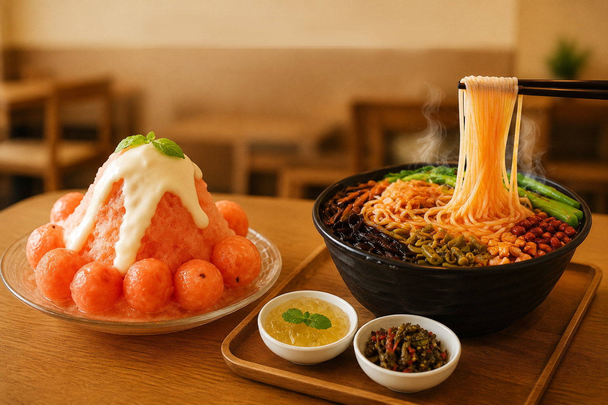
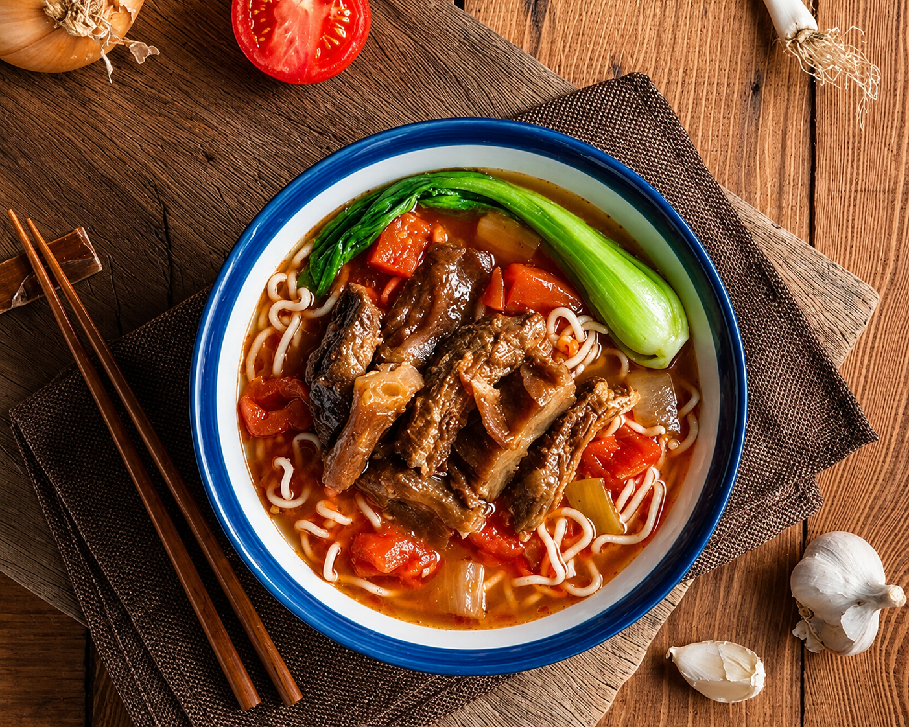
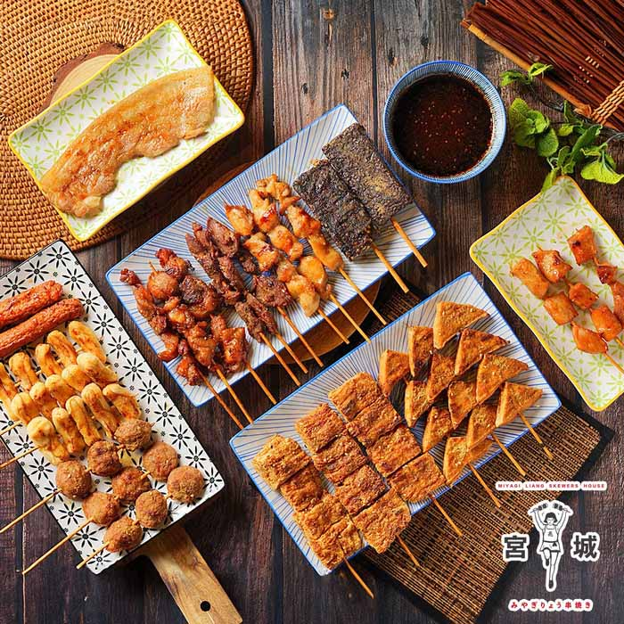
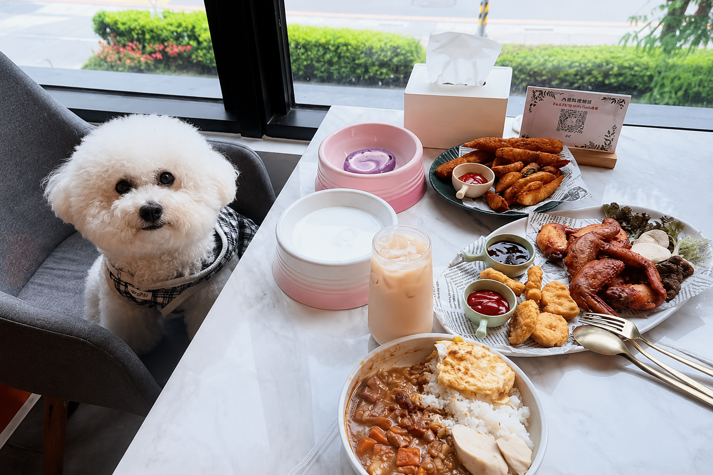
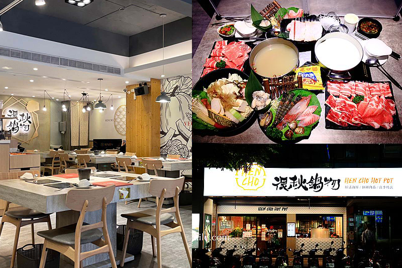

圖片來源：店家官方
🍧 雪花冰+螺獅粉 / 在地話題美食
1｜夏雪覓境：雪花冰與螺獅粉都讓人意外記住的新莊店
如果朋友第一次來新莊，
我會把夏雪覓境放在很前面。
店裡的節奏比較慢，
很適合下午坐下來休息一下，
吃點冰、聊天，
再慢慢接後面的行程。
夏天很適合先點一碗水果雪花冰，
像木瓜牛奶、西瓜雪花冰這類水果系口味，
吃起來會很清爽。
除了雪花冰之外，
店裡的螺獅粉也是主打星。
酸辣口味配上冰品，
很適合找特色的朋友一起吃，
酸菜與酸豆角搭配十分道地。
推薦情境：新莊特色小吃、夏天找冰品、在地推薦的小店。

圖片來源：店家官方
🍜 牛肉麵 / 熱食
2｜瑪賀牛肉麵：朋友來新莊時，很容易想再回訪的一碗
如果朋友想吃一餐比較有飽足感、又帶點在地感的熱食，
我通常會帶去吃 瑪賀牛肉麵。
它不是那種很浮誇的打卡店，
但湯頭、肉量與整體味道都很穩，
屬於吃完會默默記住的那種類型。
牛肉麵帶一點番茄香氣，
搭配熱湯與麵條，
很適合安排在下午行程或晚上散步前後。
推薦情境：朋友聚餐、想吃熱食、下雨天、晚上想吃舒服一點。

圖片來源：店家官方
🌙 宵夜 / 晚上散步
3｜新莊宵夜：晚上才開始熱鬧的小吃感
新莊晚上其實很適合慢慢吃點東西。
尤其這種日式串燒、炸物、烤肉類的小店，
很容易一坐下就聊天聊到很晚。
像宮城亮串燒這種偏日式風格的宵夜店，
串燒種類很多，
從日式原味燒鳥串、嚴選板腱牛肉串，
到椒麻辛香青花豬、孜然風味雞肉串都有。
如果想吃重口味一點，
涮嘴辣味雞軟骨和北海道正宗羊肉串也很適合晚上配聊天。
大家一起分著吃，
反而比正式聚餐更有宵夜感。
📍 地址：242新北市新莊區中隆里中原路86號1樓
推薦情境：朋友聚餐、晚上聊天、想吃熱食的時候。

圖片來源：店家官方
☕ 咖啡 / 寵物友善
4｜Paws cafe：適合慢下來聊天的寵物友善咖啡店
如果下午不想一直趕行程，
我很喜歡在新莊安排一間可以慢慢坐著聊天的咖啡店。
Paws cafe 是一間寵物友善餐廳，
空間舒服、氣氛放鬆，
很適合朋友聚會或帶著毛小孩一起來坐坐。
比起一直跑景點，
有時候旅行真正讓人記住的，
反而是這種慢慢坐下來聊天的小時光。
📍 地址：242新北市新莊區頭前里幸福東路132號
推薦情境：朋友聊天、下午休息、寵物友善聚餐、下雨天放慢行程。

圖片來源：店家官方
🍲 火鍋 / 聚餐
5｜很秋鍋物：天氣變涼時，很適合慢慢吃的一餐
如果朋友比較喜歡舒服坐著聊天，
新莊其實也很適合安排一間火鍋店。
很秋鍋物的空間氣氛比較放鬆，
不會有太重的商業感，
很適合朋友聚餐、下雨天，
或是晚上想慢慢吃一餐的時候。
有時候旅行不一定要一直跑景點，
反而是這種大家圍著熱鍋聊天的時間，
最容易留下記憶點。
📍 推薦情境：朋友聚餐、雨天備案、晚上想吃熱一點。